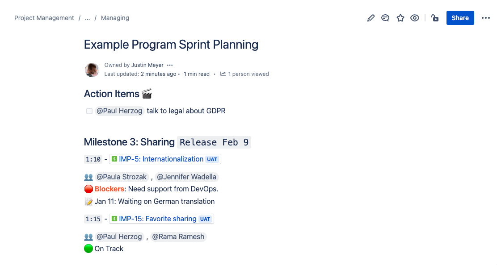

Managing page
Learn how to manage a program’s active work.
Overview
Once you have a plan, you must help coordinate and report on the plan. You will learn:
When to schedule planning ceremonies to coordinate multiple product teams.
How to run the planning ceremony.
How to set up release reporting.
The following is the Google Slides presentation for this material:
When to schedule team coordination meetings
We believe there are many different ways of managing product teams, not limited to two-week scrum-style sprints. That being said, two-week sprints are the baseline we will use for part of the training, as two-week sprints are the most common pattern we see.
For two-week product scrum teams, we strongly suggest breaking up the Sprint Planning meeting into two meetings, separated by at least one day for refinement. A two-week sprint might look like:
| M | Tu | W | Th | F | |
|---|---|---|---|---|---|
Week 1 | Sprint Start | ||||
Week 2 | Sprint Prototyping | Grooming | Grooming | Sprint Planning |
The two meetings are:
Sprint Prototyping - Product teams meet to roughly plan out their sprint.
Sprint Planning - Product teams meet to commit to a sprint.
We split out these meetings to enable more efficient sprint planning and give time for refinement. The reasons are beyond the scope of this training. If you would like to know more about how Bitovi manages a single team, please vote for “Agile Project Management with Jira”.
When multiple teams use the calendar above, we suggest adding an additional meeting between Sprint Prototyping and Sprint Planning: Program Sprint Planning. For example, it might be scheduled the day after Sprint Prototyping as follows:
| M | Tu | W | Th | F | |
|---|---|---|---|---|---|
Week 1 | Sprint Start | ||||
Week 2 | Sprint Prototyping | Program Sprint Planning | Grooming | Sprint Planning |
The Program Sprint Planning meeting is used to align multiple product teams on the delivery plan and make any adjustments necessary to the delivery plan.
The sequence of:
Individual product team Sprint Prototyping
Combined Program Sprint Planning
Individual sprint planning
… is an efficient and “product team-led” method for coordinating multiple teams. It established the following workflow:
Individual teams connect and discuss their plans and need for the following sprint
Teams meet and communicate plans, status and needs for the following sprints, enabling teams to make adjustments to their sprint plans.
Individual teams commit to their work.
This sequence is somewhat similar to a two-phased commit protocol. https://en.wikipedia.org/wiki/Two-phase_commit_protocol
Structuring Program Sprint Planning Meetings
The goal of Program Sprint Planning is to:
Ensure teams are effectively coordinating their work
To update the roadmap for future coordination and reporting needs
Furthermore, Program Sprint Planning meetings should have a high “signal to noise” ratio. This means that people should be discussing what’s important to the product and important to themselves. This is particularly challenging for Program Sprint Planning because there are often many topics to discuss, and the chances that every participant is necessary for every conversation are very low.
For this reason, we strongly encourage two changes to how typical “scrum of scrum” meetings are held:
Meetings should be organized around initiatives, not teams. Instead of each team giving its status (and the other teams potentially not paying attention), the meeting should discuss initiative by initiative.
A time-boxed agenda should be created and shared beforehand, with specific people listed to specific time-slots.
Preparing for Program Sprint Planning
A few days before Program Sprint Planning, create a program sprint planning document and share it with the team leads. The document looks as follows:

This document is sorted by initiatives release date and grouped by releases and/or milestones. For each initiative, specify the following:
1:20- a time when discussion on that initiative will take place👥 - the people who should attend a discussion on that initiative
🛑 - blockers preventing or delaying the delivery of the initiative
📝 - any other notes on timing or activity surrounding the initiative
The document also includes:
An Action Items section for listing important tasks people should follow up on.
A Continuous Exploration section for sharing status and prioritizing the exploration board.
After creating the document, you will need to:
Share the document with attendees
Remind attendees which parts of the meeting they should attend
Running Program Sprint Prototyping
Go through the initiatives, starting with the closest to delivery
Go through each epic
Get the status of the epic. Update the
statusandstartDateandendDateUpdate the document with any new info.
Take action items
Todos
New stories that need to be created?
Go through the CX board.
- Discuss how initiatives are progressing. Start with the “right”, work “left”
After the meeting
- Share a summary of the meeting in slack
Exercise
Step 1: Create the Program Sprint Planning Document
Using the template above, create a program sprint planning document. Create and share an agenda.
Step 2: Run Program Sprint Planning
Run a mock sprint planning, sharing status on each initiative.